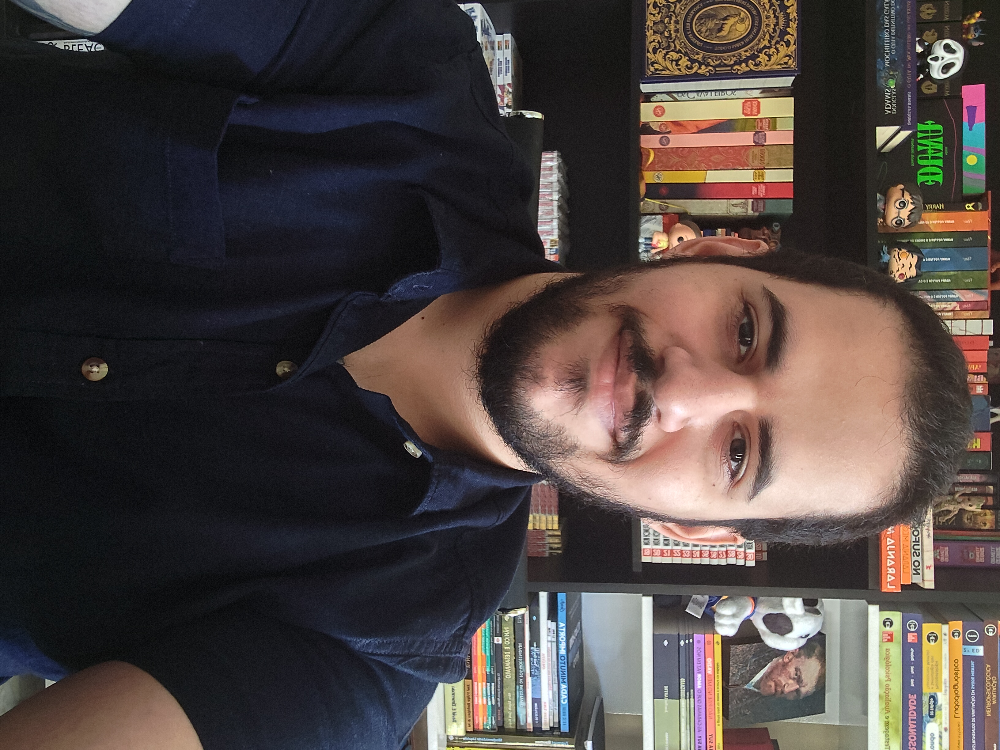

Dê o primeiro passo para o seu bem-estar emocional. Terapia focada em te ajudar a lidar com a ansiedade, estresse e reencontrar o equilíbrio.
Agendar Minha Primeira Sessão
Olá, sou o Gustavo Lucas, Psicólogo Clínico (CRP 04/74143). Sou especialista em Terapia Cognitivo-Comportamental e dedico minha carreira a ajudar pessoas a ressignificarem suas histórias.
Acredito que a terapia não é apenas para tratar adoecimentos, mas um espaço valioso para o crescimento pessoal. Meu objetivo é oferecer uma escuta acolhedora, totalmente ética e livre de julgamentos, para construirmos juntos um caminho de qualidade de vida.
Aprenda ferramentas para lidar com crises, pensamentos acelerados e recupere sua tranquilidade.
Superação de términos, dependência emocional e melhora na comunicação conjugal e familiar.
Desenvolvimento pessoal, melhora da autoestima e transição de carreira.
Clique no botão do WhatsApp e me mande uma mensagem para conversarmos e tirarmos dúvidas.
Encontraremos juntos o melhor dia e horário disponível que se encaixe na sua rotina.
Nosso encontro (online ou presencial) será um ambiente seguro, focado em você.
Sim! A modalidade online tem a mesma eficácia e rigor ético da presencial, comprovada cientificamente. A grande vantagem é que você pode fazer a sessão no conforto e privacidade da sua casa, economizando tempo de deslocamento.
As sessões individuais têm duração média de 50 minutos e, geralmente, ocorrem uma vez por semana. A frequência pode ser ajustada de acordo com a sua necessidade ao longo do processo.
Meus atendimentos são particulares, mas emito recibos ou notas fiscais para que você possa solicitar o reembolso junto ao seu plano de saúde. Verifique com a sua operadora as regras para reembolso de psicoterapia.
Apenas um celular, tablet ou computador com boa conexão de internet, câmera e microfone. É fundamental estar em um ambiente silencioso e privativo no momento da sessão para que você se sinta à vontade para falar.